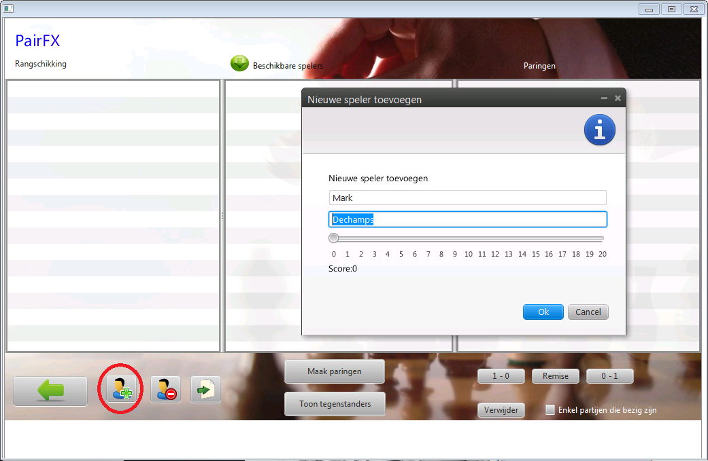
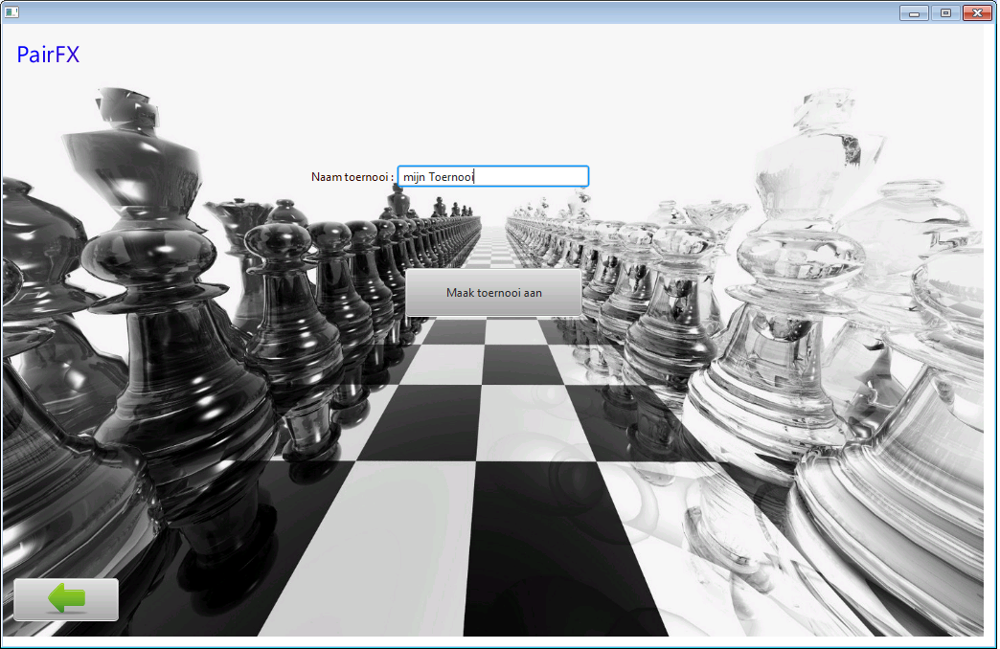

PairFX is een paring programma voor jeugd toernooien in scholen of in schaakclubs.
Het ondersteunt het organiseren van een zogenaamd doorlooptoernooi. Je kan spelers toevoegen
en wegnemen 'on the fly' en de paringen bijsturen als je dit wenst. Het werkt niet ronde gebaseerd maar partij gebaseerd, wie sneller speelt kan dus meer partijen hebben
dan wie trager speelt. Dat is helemaal niet erg.
Het paringsalgoritme sorteert de spelers volgens percentage en punten, en probeert dan van onder naar
boven toe paringen te maken.
Het belangrijkste is dat de spelers veel kunnen spelen.
Waar rondegebaseerde paringsprogramma's zoals Pairtwo goed van pas komen bij het organiseren
van clubcompetities en volwassenen toernooien, blijkt PairFX beter voor jeugdtoernooien.
Ideaal dus om op school een schaaktoernooi te spelen!
Bent u schaak lesgever op school, of organiseert u een los toernooitje in de club ? Probeer PairFx!


Hoe werkt het ?
Stel je heb 20 spelertjes, dus 10 partijen. Na 10 minuten hebben 6 spelers gedaan met spelen en niets om handen.
In plaats van zichzelf bezig houden kan je ze met PairFX direct weer laten schaken!
Is een speler het schaken even moe, dan hoef je hem niet mee te paren. Komt er een nieuwe speler bij, dan neem je hem gewoon mee in de paringen.
PairFX houdt rekening met 'kleur voorkeur' zodat het zoveel mogelijk wit en zwart afwisselt. Verder ook met het feit dat spelers de laatste 3 ronden niet tegen elkaar mogen gespeeld hebben en maximum 3 punten mogen verschillen.
Dus als PairFX de melding geeft dat een paring niet mogelijk is, dan is het om een van die redenen. Beide parameters zijn aan te passen in
de toernooi file mocht dit nodig zijn.
en het beste van al...het is volledig gratis!
Installatie:
1) Download PairFX en UNZIP het in een map
Opgelet! Dus niet downloaden en direct dubbelklikken want dan ben je in de zip file bezig en vindt het programma zijn bibliotheken niet.
Neen, unzip het programma ergens in een mapje op je schijf. bv 'c:\pairfx'.
2) Installeer de java 7 runtime (jre)
3) Start PairFX!
door te dubbelklikken op PairFX.jar of PAIRFX_FR voor de franse versie, of PAIRFX_EN voor de engelse versie.
* undo toegevoegd van pas gemaakte paringen en ook detail van de te verwijderen paringen
* mogelijkheid om fading af te zetten in admin scherm. Zo vliegt het programma, maar minder sexy ;)
Ik had gemerkt dat oudere pc's er wat last mee hadden
* Nog enkele kleine ambetantigheden gefixed (w,z,r werkte ook op al gespeelde partijen)
versie 1.14 (18/03/2014)
* found a bug! Codewise very small but enough to block a tournament! So you should really update to thisversion. What was it ? Players have a colour preference in PairFX. But it is not a priority for the pairing algorithm. There was a piece of code that threw an exception if for instance a player who really wanted to be white was again paired with black. Removed that exception since it isn't one.
* Added always forcefully pair 2 players if only 2 are selected. Guess you know what you're doing.
versie 1.13 (06/02/2014)
* toevoeging van web server. Stel je runt een toernooi en je wilt dat de laatste gemaakte paringen elders geprojecteerd worden.
Open uw toernooi, ga naar het admin scherm en start de server. Er staat een link bij waarop je kan klikken. Het is die link die je moet gebruiken op de pc waar de projector aan hangt. Hiermee surf je naar een pagina gegenereerd door PairFX op de pc waar PairFX draait.
Deze pagina auto refreshed elke 30 seconden. Als de server draait op PairFX, dan zullen de nieuwe paringen automatisch gesaved worden in de web/ directory onder de naam export.html. Als u naar http://'uw pairfx ip'/export.html surft en de browser daar laat staan zal u dankzij de auto refresh automatisch de laatste paringen blijven zien.
* Er is een filter toegevoegd onder de paringen kolom. Als u er iets intikt dan filtert de lijst op naam en voornaam van zowel wit als zwart. Alsook op id als u een nummer intikt. De filter herkent dat het een nummer is en filtert op de id.
* Import van xls en xlsx ondersteund nu ook id. Het nummer in de eerste kolom wordt genomen als id voor een speler en mee opgeslagen.
versie 1.12 (26/01/2014)
2 belangrijke wijzigingen in deze release:
* PairFX is vertaald! Je kan het nu opstarten via PairFX_NL, PAIRFX_FR of PAIRFX_EN
Elke andere taal kan nu in no-time toegevoegd worden. Spread the word!
* experimenteel: Import van excel. xls en xlsx is ondersteund. formaat: het eerste blad wordt genomen, daarvan de 3de kolom en die
wordt geimporteerd. Formaat: naam voornaam dus bv: Van De Velde Jan --> voornaam: Jan , naam: Van De Velde. Dit zal nog veranderen maar is voorlopig
om schoolschaak toernooien te ondersteunen. We willen uiteraard naar een kolom voor naam, en een kolom voor voornaam.
versie 1.11 (19/01/2014)
* nieuwe toernooien kunnen nu gemaakt worden gebaseerd op oude toernooien. Op het 'nieuw toernooi' scherm kan je uit de dropdownbox een ander toernooi kiezen.
Als je nu een naam intikt en op 'Maak toernooi aan' klikt dan wordt het toernooi aangemaakt en worden alle spelers (enkel naam en voornaam) uit het geselecteerde toernooi direct aangemaakt in het nieuwe toernooi. Dit kan veel tijd uitsparen als je altijd met ongeveer dezelfde spelersgroep zit.
* title gezet
* toggle button vervangen door radio button voor de duidelijkheid in het Administrator scherm
versie 1.10 (12/01/2014)
* afwezigheden toevoegen (bij edit van een speler kan je hem nu afwezig zetten)
* na starten van een toernooi, kan je op het startscherm nu op een knop klikken 'Administrator' waar je parameters kan aanpassen
* de % knop om te switchen tussen procentuele paringen en klassement en punten is verzet naar het nieuwe Administrator scherm.
* bugfix in paringen (x ronden niet tegen elkaar spelen werd niet gechecket voor de 2de speler)
* editeren gefixet
versie 1.9 (02/01/2014)
* on the fly switchen van paringsstrategie % of volgens punten (opgelet! Dit verandert niet perse iets op je scherm. Maar rangschikking en paringen zijn nu anders)
* sorteren op punten ook in de pool beschikbare spelers
* huidige paringen en reeds gespeelde partijen ook in export gestoken
* punten weggehaald van een speler wegens volgens mij onnodig complex
* kleine bugfixes en grote refactor en code cleanup
* 'terug' pijl image ontbrak op sommige schermen
versie 1.8 (22/12/2013)
* bugfix voor paringen waar naam niet ingevuld was
* knopje om rangschikking op % of punten te zien (dit verandert niets aan de werking, enkel visueel)
* icoontjes aangepast
* insert/delete/enter voorzien op spelerslijst via toetsenbord
* delete voorzien op paringen via toetsenbord
* onafgewerkte partijen beïnvloeden de paring niet meer
versie 1.7 (18/12/2013)
* paringen in kleur: nieuwe in het blauw, afgewerkte in het groen en bezig in het zwart
* export op basis van percentage of punten (je kan kiezen)
* kopieren van de css file naar de export directory van de html
versie 1.6 (15/12/2013) en ervoor: basis functionaliteit
* toernooien aanmaken
* spelers toevoegen, verwijderen en editeren
* paringen maken en verwijderen
* rangschikking exporteren in txt en html